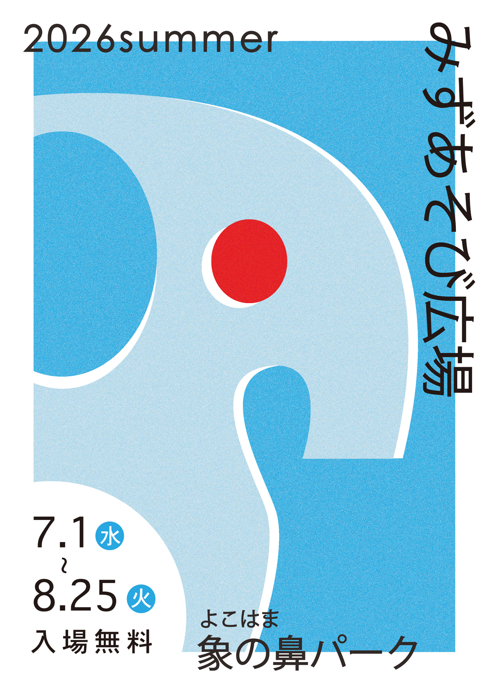
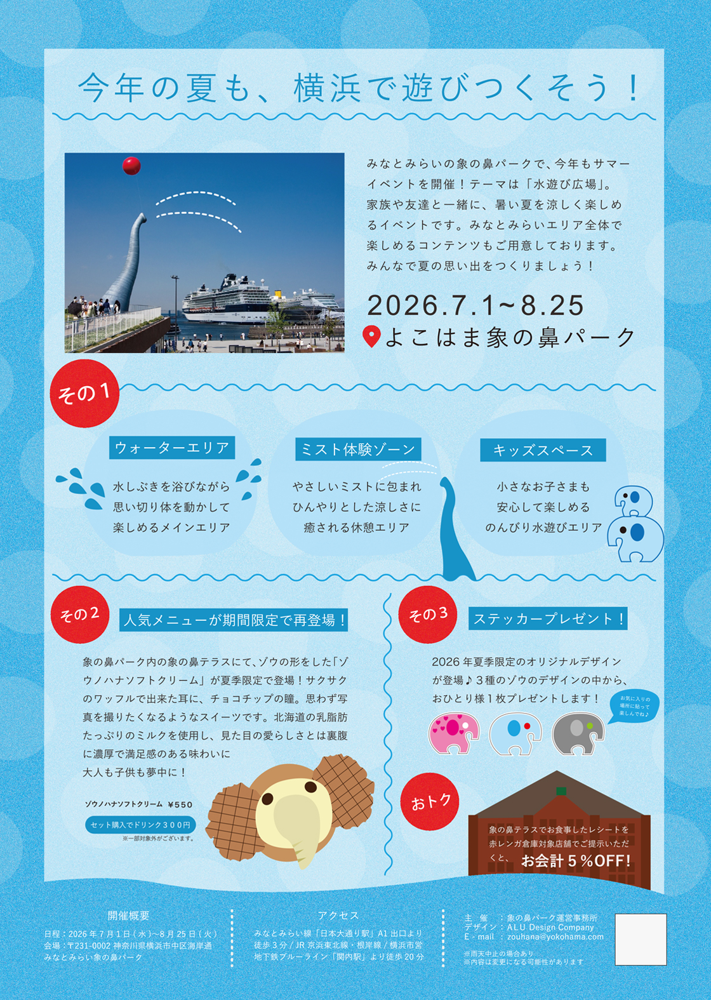

ゾウの鼻パーク みずあそび広場
Graphic Design / fryer Design
Adobe Illustrator
横浜 ゾウの鼻パークにて開催される、架空の夏のみずあそびイベントのフライヤーデザインを制作。都市の中で、親子で自由に楽しめる夏季イベントで、横浜・みなとみらい全体を巡りたくなるような体験を提案。象をモチーフにしたビジュアルを大きく配置し、粒状の質感を加えることで夏らしい涼しさを表現。シンプルなレイアウトで、みなとみらいの都市的な雰囲気と港の開放感が引き立つデザインに仕上げている。